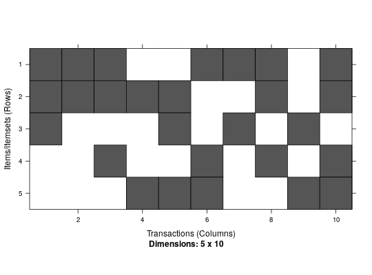

Transaction ID lists contains a set of lists. Each list is associated with
an item/itemset and stores the IDs of the transactions which support the
item/itemset. tidLists uses the class
ngCMatrix to efficiently store the
transaction ID lists as a sparse matrix. Each column in the matrix
represents one transaction ID list.
tidLists can be used for different purposes. For some operations
(e.g., support counting) it is efficient to coerce a
transactions database into tidLists where each
list contains the transaction IDs for an item (and the support is given by
the length of the list).
The implementation of the Eclat mining algorithm (which uses transaction ID
list intersection) can also produce transaction ID lists for the found
itemsets as part of the returned itemsets object. These
lists can then be used for further computation.
Objects are created by Eclat if the eclat function is called
with tidLists = TRUE in the ECparameter object,
and returned as part of the mined itemsets. Objects can
also be created by coercion from an object of class
transactions or by calls of the form
new("tidLists", ...).
data:ngCMatrix.itemInfo:itemMatrix class).transactionInfo:signature(from = "tidLists", to = "ngCMatrix");
access the sparse matrix representation. In the
ngCMatrix each column represents the transaction IDs
for one item/itemset.signature(from = "tidLists", to = "list")signature(from = "list", to = "tidLists")signature(from = "tidLists", to = "matrix")signature(from = "tidLists", to = "itemMatrix")signature(from = "tidLists", to = "transactions")signature(from = "itemMatrix", to = "tidLists"); this also coerces from transactions.signature(from = "transactions", to = "tidLists")signature(x = "tidLists"); combine.signature(x = "tidLists");
returns the dimensions of the sparse Matrix representing the
tidLists.signature(x = "transactions");
returns row (items/itemsets) and column
(transactionIDs if available) names.signature(x = "transactions");
returns the labels for the itemsets in each transaction
(see itemMatrix).itemInfo.signature(object = "tidLists");
returns the item labels as a character vector.signature(x = "transactions");
returns the labels (transaction IDs).signature(object = "tidLists")signature(object = "tidLists")signature(x = "transactions"):
returns the slot transactionInfo.[-methods,
LIST,
eclat,
image,
length,
size,
ngCMatrix(in Matrix),
itemMatrix-class,
itemsets-class,
transactions-class
## Create transaction data set. data <- list( c("a","b","c"), c("a","b"), c("a","b","d"), c("b","e"), c("b","c","e"), c("a","d","e"), c("a","c"), c("a","b","d"), c("c","e"), c("a","b","d","e") ) data <- as(data, "transactions") data#> transactions in sparse format with #> 10 transactions (rows) and #> 5 items (columns)## convert transactions to transaction ID lists tl <- as(data, "tidLists") tl#> tidLists in sparse format with #> 5 items/itemsets (rows) and #> 10 transactions (columns)inspect(tl)#> items transationIDs #> 1 a {1,2,3,6,7,8,10} #> 2 b {1,2,3,4,5,8,10} #> 3 c {1,5,7,9} #> 4 d {3,6,8,10} #> 5 e {4,5,6,9,10}dim(tl)#> [1] 5 10dimnames(tl)#> [[1]] #> [1] "a" "b" "c" "d" "e" #> #> [[2]] #> NULL #>## mine itemsets with transaction ID lists f <- eclat(data, parameter = list(support = 0, tidLists = TRUE))#> Eclat #> #> parameter specification: #> tidLists support minlen maxlen target ext #> TRUE 0 1 10 frequent itemsets FALSE #> #> algorithmic control: #> sparse sort verbose #> 7 -2 TRUE #> #> Absolute minimum support count: 0 #>#> Warning: You chose a very low absolute support count of 0. You might run out of memory! Increase minimum support.#> create itemset ... #> set transactions ...[5 item(s), 10 transaction(s)] done [0.00s]. #> sorting and recoding items ... [5 item(s)] done [0.00s]. #> creating bit matrix ... [5 row(s), 10 column(s)] done [0.00s]. #> writing ... [21 set(s)] done [0.00s]. #> Creating S4 object ... done [0.00s].#> items transationIDs #> 1 {b,c,e} {5} #> 2 {a,b,c} {1} #> 3 {a,c} {1,7} #> 4 {b,c} {1,5} #> 5 {c,e} {5,9} #> 6 {a,b,d,e} {10} #> 7 {a,d,e} {6,10} #> 8 {b,d,e} {10} #> 9 {a,b,d} {3,8,10} #> 10 {a,d} {3,6,8,10} #> 11 {b,d} {3,8,10} #> 12 {d,e} {6,10} #> 13 {a,b,e} {10} #> 14 {a,e} {6,10} #> 15 {b,e} {4,5,10} #> 16 {a,b} {1,2,3,8,10} #> 17 {a} {1,2,3,6,7,8,10} #> 18 {b} {1,2,3,4,5,8,10} #> 19 {e} {4,5,6,9,10} #> 20 {d} {3,6,8,10} #> 21 {c} {1,5,7,9}